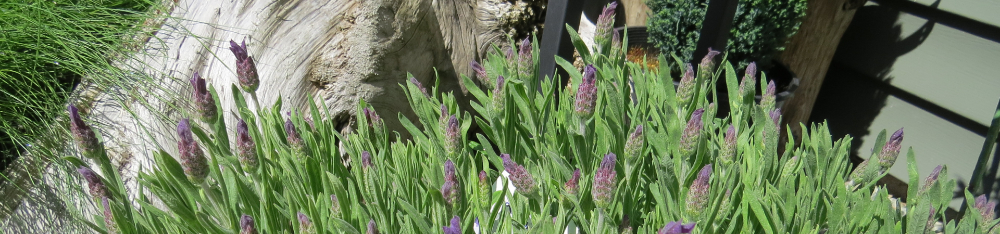
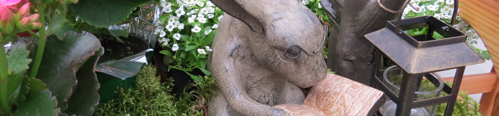
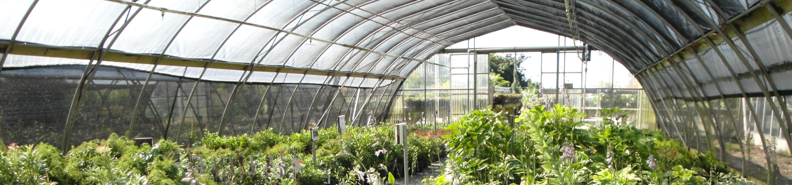
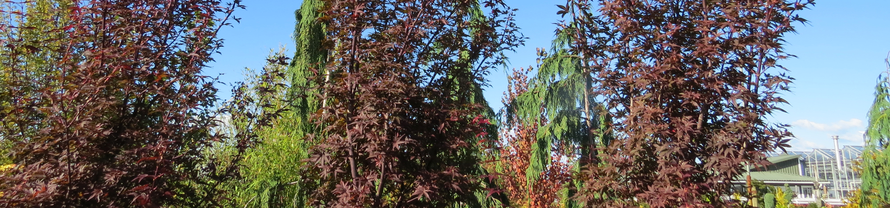
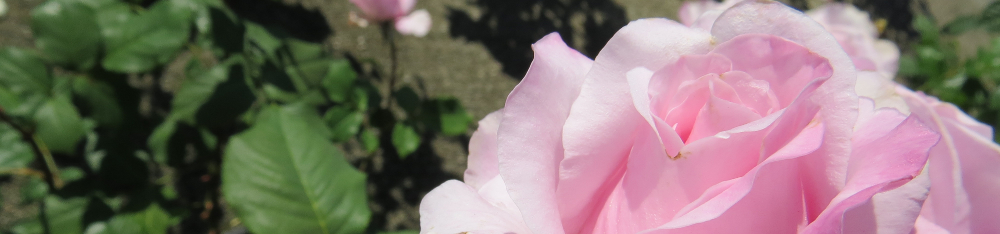
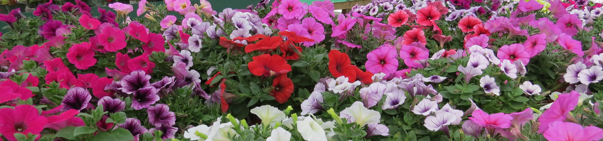
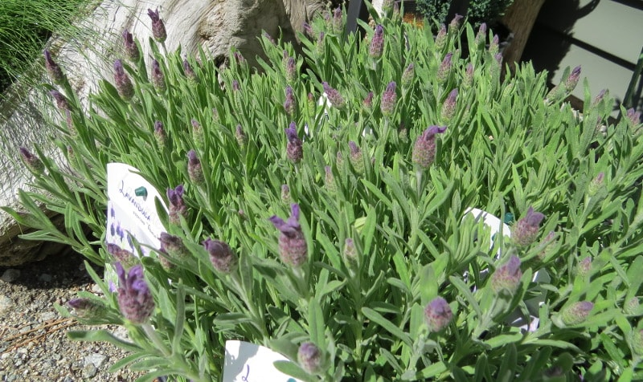
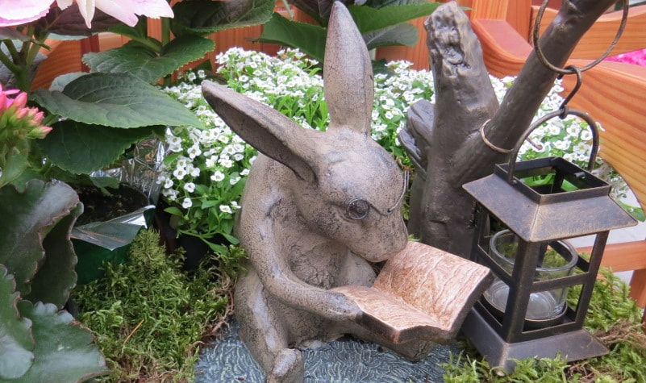
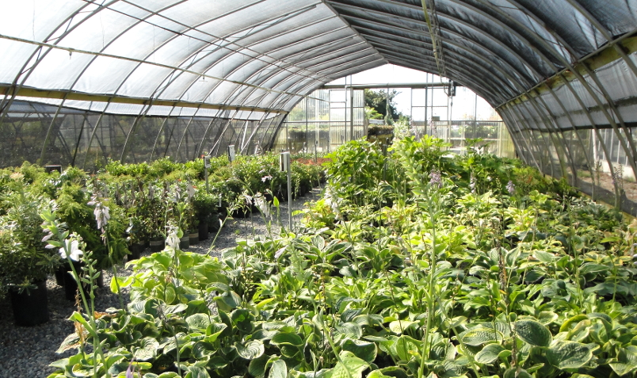
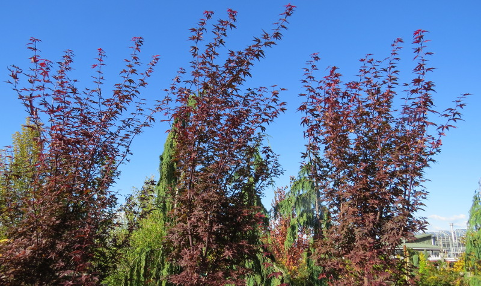
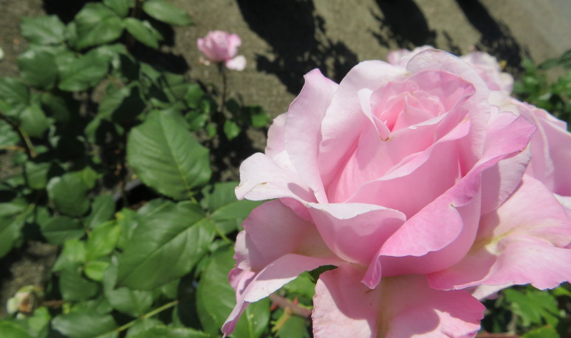
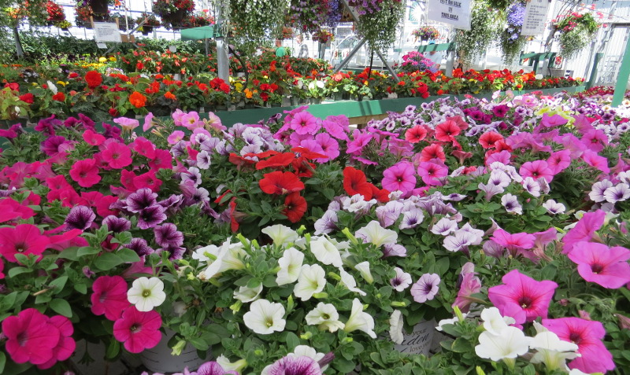

Originally from Holland, Jack and Jeannie Van Vliet moved themselves and their five children from the old country to Canada. After having one more child here in Delta, the Van Vliets decided to begin a new adventure.

In 1979, Jack Van Vliet quit his family construction business to begin a new business with his wife and sons. After some planning and preparation, Jack, his wife Jeannie, and their son Len opened Sunnyside Nurseries in March of 1980. They were committed to providing the Ladner and Tsawwassen with unparalleled garden products and impeccable customer service.
The first 7 years of operation were a struggle for Sunnyside. The business had difficulties penetrating the local market and the Van Vliet’s faced a steep learning curve competing in the garden industry. Despite all of the adversity, Sunnyside was a labor of love for the Van Vliets, and they persevered. Working together, and staying committed to the community, they were able to grow the business into the bustling nursery it is today!
As locals of Ladner, the Van Vliets had to commute into Tsawwassen at the crack of dawn each morning to open the nursery. However, this only lasted a few years, as it became apparent that the nursery would require almost constant attention. In 1984 Jack and Jeannie, as well as Len and his new wife Kathy all moved onto the property to properly care for the growing business and the increasing demands of caring for all the stock.

Ron – another of Jack and Jeannie’s sons – joined the nursery operation in 1987. For a few years, Rene Van Vliet worked at the Nursery with his until in March of 1989 Rene Van Vliet bought into the business as an owner. With a large family team, the Van Vliets became a staple of the community and have grown Sunnyside into South Delta’s premier nursery.
Today, Jack and Jeannie are still very active in the business and are often in the nursery helping their sons Len and Rene, who now operate the nursery. Jack and Jeannie still live on the property, and hope to live out the remainder of their lives at the nursery they built with their sons.
After 10 years of working with Sunnyside Len’s wife Kathy left the nursery to start her own landscaping service, although you can still catch her around the nursery from time to time. Rene’s wife Melanie has become extremely involved in the nursery as well between running the giftware section of the store as well as the nurseries Facebook page and web presence! Years of hard work have brought this family closer and grown.